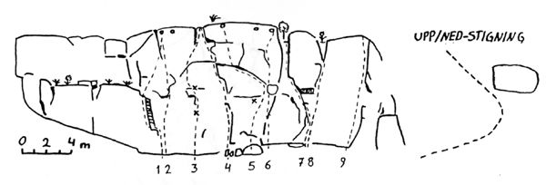

Tormestorp
GPS: 56.09561,13.74886
Allmänt
En liten och kanske inte så väldigt betydelsefull klippa. Men har man vägarna förbi kan det kanske vara av intresse. Området består av tre väggar och två större flyttblock.
Boulderväggen är något lägre, ca 5-6 m som högst, medan huvudväggen och nedre väggen är ca 10 m höga.
Klättringen är av karaktären väggklättring strax under 90 grader, mestadels på små lister.
Klippan har vid torrt väder mycket fin friktion. Att tänka på är att den torkar långsammt och behöver minst en varm sommardag för att torka upp. Boulderblocken är kanske inte så mycket att hänga i julgranen med dagens mått på bouldering.
Förutom de tre väggarna i "Stora Tormestorp" finns en mindre vägg. Klippkvalitén på denna är mycket god, men klippan är dessvärre mycket svår att finna.
Hitta hit
Kör E22 från Lund/Malmö norrut. I Rollsberga tar du av på väg 23 mot Växjö. Passera Höör. Några km innan Hässleholm tar du av mot Hovdala slott och Tormestorp(väg 117?). Efter några km tar du höger in mot Tormestorp. Vägen gör en lång vänstersväng. Vid svängens slut går en liten väg in åt höger. Följ denna förbi något hus, några svängar och någon träddunge. Snart tar vägen mer eller mindre slut i samband med den igenmurade porten till det gamla militära bergrummet. Parkera här. Följ sedan den branta skogen upp och snett åt höger i kanske 300 meter. Den förtsa väggen du kommer till är C-väggen. Lilla Tormestorpsklippan kan vara svår och tålamodsprövande att hitta i den täta lövskogen. I runda slängar kan man säga att den ligger 600 meter nord/nordöst från de andra väggarna.
Stora Tormestorp
Klippan sedd nerifrån. Det finns upp/nedstigningsleder vid sidan av varje vägg.
Till boulderblocken går man från klippan snett nedåt vänster i backen ca 100m
Boulderväggen
- 1
- Namnlös
- 3+
- Stora sprickan rakt upp till trädet
Huvudväggen

- 1
- Namnlös
- 4
- Areten till vänster om diedern till hyllan, därefter snett till höger till vänstra firningsbulten
- 2
- Namnlös
- 5
- Samma insteg som led 1, därefter rakt upp för väggen till underdelen av flaket. Klättra över flaket rakt mot vänstra firningsbulten. Risigt säkrad
- 3
- Microlax
- 6
- Starta vid den lilla bullen rakt under bulten. Gå rakt upp mot bulten via små lister utan att använda nicodemus grepp. Vid bladbulten (om den finns kvar...) något vänster och sedan rakt mot nicodemus utsteg.
- 4
- Nicodemus
- 5
- Gå i den lilla fingersprickan rakt upp mot flaken till vänster om 3:e firningsbulten från vänster. Välsäkrad med kilar
- 5
- Tormestorpsleden
- 5+
- Starta ca 1,5 m till höger om Nicodemus. Rakt upp mot borrbulten, därefter svagt höger till tvärsprickan. Denna följs till vänster, till Nicodemus utsteg. Säkras med kilar och någon friend i tvärsprickan
- 6
- Nozinal
- 6-
- Starta 1 m till höger om Tormestorpsleden och gå i rak linje uppåt
- 7
- Namnlös
- ?
- Följ stora sprickan rakt upp åt vänster
- 8
- Klassikern
- 6
- Rakt upp till höger om taket via den tunna sprickan
- 9
- Mallorol
- 6-
- Starta 2 m till höger om klassikern och klättra utmed aretén. Säkras med kilar
Nedre väggen
- 1
- Ugglor i mossen
- 5+
- Rakt upp på den släta väggen bakom det stora blocket på marken. Säkras med en friend på mitten
Boulderblocken
- 1
- Folköl och dunkadunka
- 6-
- Rakt upp vid det skuggade partiet, till svaet och vidare upp i diedern till toppen. Säkras med kilar
- 2
- Myggvrål
- 6
- Rakt upp till borrbult, därefter sprickan till toppen
- 3a
- Banal konfekt
- 6
- Samma insteg som myggvrål till tvärsprickan, sedan ut på hörnet och upp över taket
- 3b
- Variant
- 7-
- Insteg på hörnet och sedan rakt upp till orginalleden
- 4
- Diedern
- 6
- Följ den stora diedern rakt upp
- 5
- Boulder
- ?
- Traversera det lilla taket fram och tillbaka. Tungt och överhängande.
- 6
- Boulder
- ?
- Gå genom taket i högerkanten och snedda sedan ut åt höger
- 7
- Boulder
- Projekt?
- Korsa taket där det är som högst (på två lister), sedan rakt upp
Lilla Tormestorp
- 1
- Tupperware
- 7+
- Tunn klättring säkrad med en borrbult
- 2
- Namnlös
- 5-
- Till höger om Tupperware. Säkras med en borrbult och en kil till utsteget
Kategori:Skåne
Copyright (C) Permission is granted to copy, distribute and/or modify this document under the terms of the GNU Free Documentation License, Version 1.3